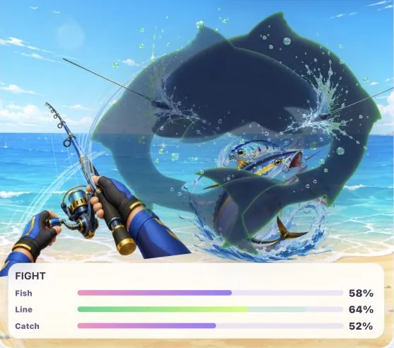
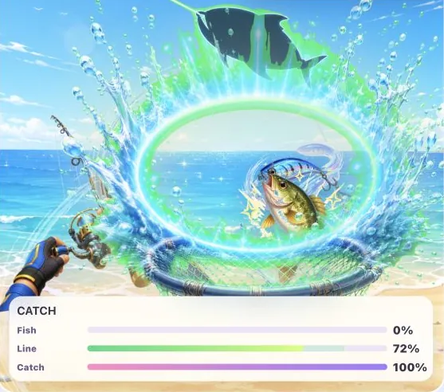
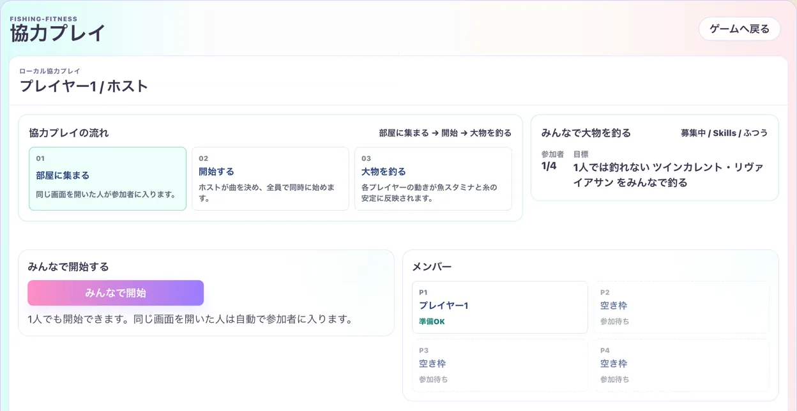

product
開発中特許出願中（特願2026-091660）
Punching Arranger（Fishing-Fitness）
好きな曲に合わせて体を動かすと、釣りが進むフィットネス音楽ゲーム
曲に合わせてパンチ・キック・しゃがみなどの動作を入力すると、魚のアタリ、ファイト、取り込みが進みます。1曲ごとに釣果と消費カロリーを記録します。
入力はキーボード、Joy-Con、Webカメラの姿勢推定に対応しています。曲・譜面・キャラクター・魚・釣り場・アクションは、遊ぶ人が自分用にアレンジできます。
2026年5月にパンチ型リズムゲームの試作として始め、6月から釣りフィットネスゲームとして作り直しています。開発の経緯は開発日誌で公開しています。
取り組んだこと
- 曲ごとに かんたん・ふつう・むずかしい の譜面を自動生成
- Webカメラの姿勢推定（MediaPipe）で身体の動きを判定
- Joy-Con（WebHID）とキーボードでも遊べる入力設計
- 釣果・消費カロリー・体重の記録を端末内に保存
- 魚図鑑、連続で遊べるコース、最大4人の協力プレイ
- 期間
- 2026年5月〜（開発中）
- 体制
- 企画・設計・開発（個人開発。AIエージェントを活用）
- 技術
- JavaScript / IndexedDB / MediaPipe Pose / WebHID / WebSocket / Tauri / Playwright（初期試作: React・Cloudflare Workers）
- 実績
- 特許出願中（特願2026-091660）。aiarranger.jp で開発日誌を公開中です。